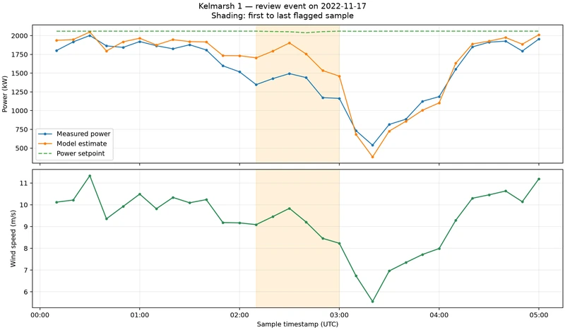

01 Windenergie · Messdaten
Leistungsanalyse einer Windenergieanlage
5 auffällige Ereignissemit anhaltender Leistungsabweichung, ausgewählt für die technische Prüfung.
Historische Analyse; Ursachen nicht bestätigt. Keine Live-Telemetrie.

Grafik vergrößern ↗Details anzeigenDetails ausblenden
Wo weicht die gemessene Leistung vom Modell ab?
Mein Beitrag: Datenqualität geprüft, Referenz- und Regressionsmodelle verglichen und Abweichungsereignisse ausgewertet.
Code ansehen ↗